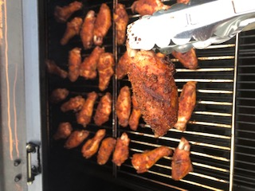

Easy and delicious chicken wings on the smoker.
This recipe is for a dry rub style chicken wing that can be easily made for game day!
Ingredients
- Chicken wings
- Broil King Perfect Steak spice rub
- Frank's Red Hot original dry seasoning
Steps
- Pat wings completely dry.
- Sprinkle perfect steak rub on to both sides of the wings.
- Coat wings with Frank's dry rub.
- Smoke 1 hour at 180F skin side up.
- Flip wings and increase temperature to 350F.
- Cook for 45-minutes flipping once halfway through.